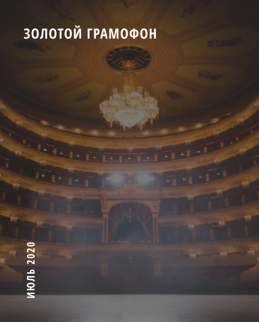
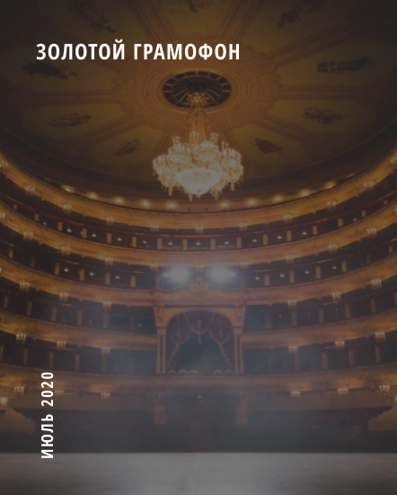

Самый лучший театр СПБ
Как свидетельствуют архивные документы, первое каменное здание Большого театра начали возводить в 1775 году по проекту Антонио Ринальди. В дальнейшем, после того как Ринальди упал с лесов и не мог лично наблюдать за ходом работ, Екатерина II поручила немецкому театральному декоратору и архитектору Людвигу Филиппу Тишбейну создать новый проект театра, который и был воплощён архитекторами Ф. В. фон Бауром и М. А. Деденёвым. Открытие его состоялось в 1783 году, хотя, основываясь на других свидетельствах, годом открытия можно считать 1784 год.


 
